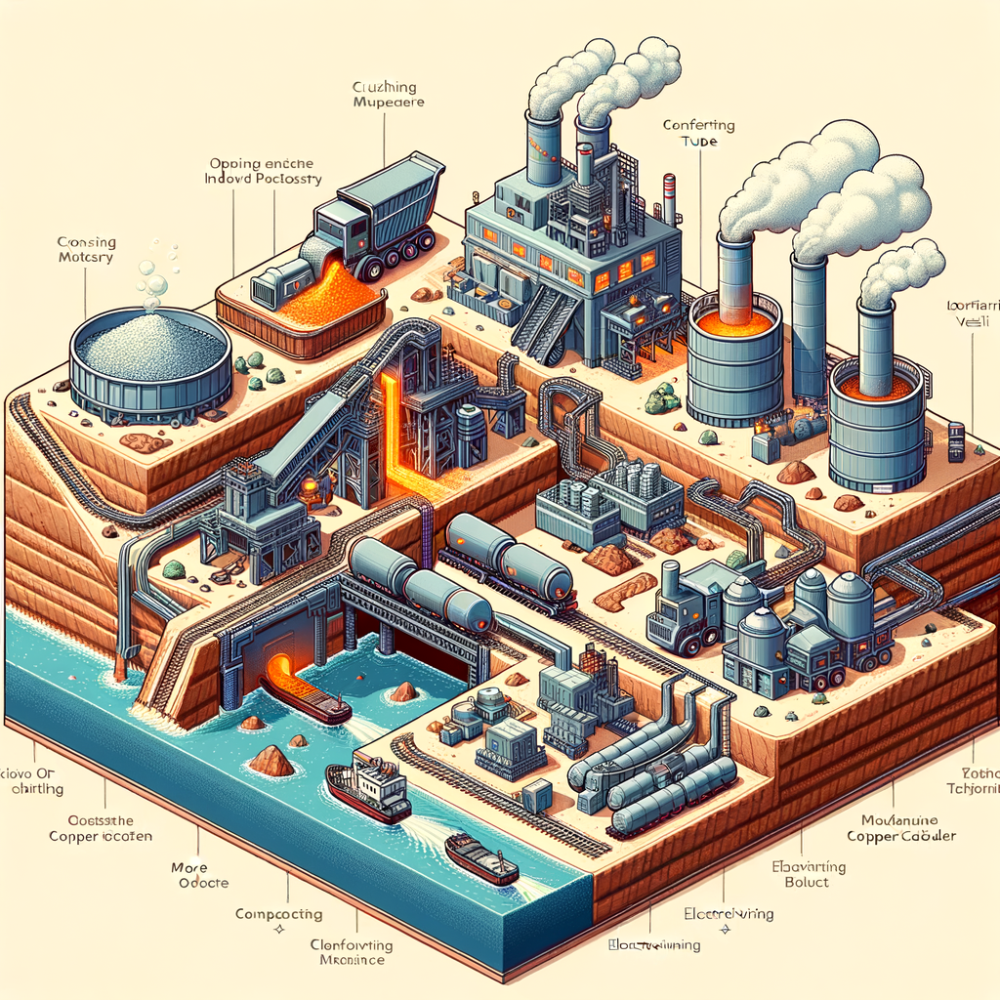

Copper
Executive Summary
This report provides a comprehensive analysis of the global copper market as of mid-2025. Copper, often termed "Dr. Copper" for its ability to signal global economic health, now stands as a cornerstone of the 21st-century economy. [1] Its strategic importance has been magnified by the global energy transition and digital transformation, making it indispensable for electric vehicles (EVs), renewable energy systems, and AI-driven data centers. [2][3]
The market is currently defined by a structural supply-demand imbalance. While global demand is forecast to grow significantly—potentially by over 40% by 2040—supply is struggling to keep pace. [2][3] This is due to a confluence of factors including declining ore grades, long lead times for new mine development (up to 25 years), and significant geopolitical risks in key producing regions. [3] Projections indicate that meeting future demand may require 80 new mines and $250 billion in investment by 2030. [2][3]
Key takeaways from this analysis include:
- Demand is Structurally Bullish: The green energy transition is the primary long-term demand driver. An EV requires up to four times more copper than a conventional car, and expanding electricity grids and renewable power generation are intensely copper-dependent. [1][4]
- Supply is Fragile: Production is highly concentrated in Latin America, particularly Chile and Peru, exposing the supply chain to political instability, regulatory changes, and community opposition. [5][6]
- Processing Bottlenecks: While mining is concentrated in the Americas, refining is dominated by China, creating a significant geopolitical chokepoint in the value chain. [5]
- Price Volatility: The market is entering a period of anticipated deficits, which, coupled with financial market speculation and currency fluctuations, is expected to support prices but also increase volatility. The Stocks-to-Use ratio is tightening, and low Treatment & Refining Charges (TC/RCs) signal a severe shortage of raw materials for smelters. [7][8]
Variables to watch closely include: policy shifts in Chile and Peru regarding mining royalties, the pace of China's economic growth, the speed of EV adoption, and the development of new mining and recycling technologies.
Part 1: Introduction & Market Overview
1. Strategic Importance Copper is a foundational metal for global economic and societal progress. [9] Renowned for its exceptional electrical and thermal conductivity, ductility, and corrosion resistance, it is a critical industrial input. [10] Its role has evolved from a key component in traditional construction and manufacturing to a strategic asset in the global transition to a low-carbon economy. [3][11] The metal is indispensable for electrification, underpinning everything from power grids and telecommunications to the advanced technologies driving the Fourth Industrial Revolution. [1][2]
2. Primary Uses & Market Segmentation The global copper market is segmented by end-use, with demand driven by several key sectors. As of 2024, the building and construction industry was the largest consumer, accounting for approximately 26.4% of the market, primarily for electrical wiring, plumbing, and HVAC systems. [10][12] Other major segments include:
- Infrastructure (Power & Telecom): ~17% [3]
- Industrial Equipment: ~12% [3]
- Transportation (including EVs): ~13% [3]
- Consumer Products, Cooling & Electronics: ~23% [3]
The primary product form is wire, which accounted for over 61% of the market in 2024, reflecting its essential role in all electrical applications. [12][13]
3. Key Market Ecosystem
Participants: The copper market involves a range of global players:
- Major Mining Companies: State-owned Codelco (Chile) and giants like Freeport-McMoRan, BHP, Glencore, and Southern Copper Corporation.
- Smelters & Refiners: China is the dominant force in copper refining, controlling a significant portion of global capacity. [5] Other key players are located in Chile, Japan, and Europe.
- Multinational Trading Houses: Companies like Glencore and Trafigura play a crucial role in moving copper concentrates and refined metal across the globe.
- Large-Scale Consumers: These include wire and cable manufacturers, automotive OEMs, and electronics producers.
Benchmark Contracts & Exchanges: The price of copper is discovered on global futures exchanges. The two primary benchmarks are:
- London Metal Exchange (LME): The LME Grade A Copper contract is the global benchmark.
- CME Group (COMEX): The High-Grade Copper (HG) futures contract is the primary North American benchmark. [14]
| Feature | Detail |
|---|---|
| Exchange Symbol | HG |
| Contract | High-Grade Copper |
| Exchange | COMEX (CME Group) |
| Contract Size | 25,000 pounds |
| Price Quotation | U.S. dollars and cents per pound |
| Tick Size | $0.0005 per pound ($12.50 per contract) |
| Margin/Maintenance | ~$9,900 / $9,000 (Varies with market volatility) |
| Contract Months | 24 consecutive months, plus Mar, May, Jul, Sep, Dec out to 63 months |
| Trading Hours | Sunday - Friday, 6:00 p.m. - 5:00 p.m. ET (nearly 24 hours) |
| Last Trading Day | Third last business day of the contract month |
Part 2: Global Landscape & Trade Flows
1. Global Production Centers (Mine Production) Global copper mine production is geographically concentrated, creating inherent supply-side risks. In 2024, global mine output was projected to be around 22.9 million metric tons. [10] Over half of the world's copper reserves are located in just five countries. [2]
Top 5 Producing Countries (Mine Output, 2024 Estimates):
| Country | Estimated Production (Million Tonnes) | Global Market Share | Competitive Advantage |
|---|---|---|---|
| 1. Chile | ~5.0 - 5.7 MT | ~25-27% | World's largest reserves, established infrastructure. [5][16] |
| 2. Peru | ~2.6 - 2.8 MT | ~12% | Significant reserves, though facing social unrest. [5][17] |
| 3. DR Congo | ~2.5 MT | ~11% | High-grade deposits, rapidly growing output. [2][17] |
| 4. China | ~1.9 MT | ~8-9% | Proximity to refining, state support. [5] |
| 5. United States | ~1.2 MT | ~5-6% | Mature industry, technological expertise. [18] |
Competitive advantages in these regions are primarily geological. However, production is increasingly hampered by declining ore grades, water scarcity (especially in Chile and Peru), and political instability. [6][16]
2. Global Consumption Hubs (Refined Copper) Refined copper consumption is dominated by industrial powerhouses, with the Asia-Pacific region accounting for the vast majority of demand. [12][13]
Top 5 Consuming Countries (Refined Consumption, 2024 Estimates):
| Country | Estimated Consumption (Million Tonnes) | Global Market Share | Consumption Patterns |
|---|---|---|---|
| 1. China | ~14.0 - 15.0 MT | ~55-60% | Massive manufacturing, construction, and grid investment. [10][19] |
| 2. United States | ~1.8 - 2.0 MT | ~7-8% | Industrial base, infrastructure renewal, EV manufacturing. [12] |
| 3. Germany | ~1.2 - 1.4 MT | ~5% | Industrial machinery, automotive sector. |
| 4. Japan | ~0.9 - 1.0 MT | ~4% | Advanced electronics, automotive manufacturing. |
| 5. South Korea | ~0.8 - 0.9 MT | ~3-4% | Electronics, shipbuilding, automotive. |
3. International Trade Dynamics The copper trade flows in two primary forms: copper concentrates (from mines to smelters) and refined copper cathodes (from refiners to end-users).
Top Exporters (Copper Ores & Concentrates, 2024 Data): [20][21]
- Chile: ~$30.1 billion (29.4%)
- Peru: ~$20.7 billion (20.2%)
- Indonesia: ~$8.0 billion (7.8%)
- Brazil: ~$4.2 billion (4.1%)
- Australia: ~$4.1 billion (4.0%)
Top Importers (Copper Ores & Concentrates): China is by far the largest importer of copper concentrates, feeding its massive smelting and refining industry. [5] Other significant importers include Japan, South Korea, and Germany.
Primary Trade Routes: The core logistical corridor for copper concentrates is from the west coast of South America (Chile, Peru) across the Pacific to East Asia (primarily China). For refined copper, the flow is more distributed, originating from major refining hubs (China, Chile, DRC, Japan) and moving to industrial centers worldwide.
Part 3: The Full Value Chain
1. Upstream: Mining & Concentration
- Mining: Copper extraction begins with either open-pit or underground mining. [22] Open-pit mining, used for deposits near the surface, involves creating large, terraced excavations. [23] Underground mining is more complex and costly, reserved for deeper ore bodies. [22] In both methods, rock is blasted and hauled for processing. [23][24]
- Concentration: The mined ore, often containing less than 1% copper, must be concentrated. [25] This involves:
- Crushing & Grinding: The ore is crushed into smaller pieces and then ground into a fine powder in large mills. [22][26]
- Froth Flotation (for Sulfide Ores): The powdered ore is mixed into a slurry with water and chemicals. Air is bubbled through, and copper sulfide particles attach to the bubbles, floating to the surface to be skimmed off as a concentrate. [23][27] This process yields a concentrate with 15-35% copper content. [25][26]
2. Midstream: Smelting, Refining & Logistics The value chain splits here depending on the ore type.
- Pyrometallurgy (for Sulfide Concentrates): This is the most common route.
- Smelting: The concentrate is heated to over 1,200°C (2,300°F) in a furnace. [23][25] This separates it into molten "matte" (a mix of copper and iron sulfide) and slag (impurities). [28][29]
- Converting: Air is blown through the molten matte in a converter to remove remaining iron and sulfur, producing "blister copper" of 98.5-99.5% purity. [28]
- Electro-refining: The blister copper is cast into anodes and placed in an electrolytic cell. An electric current dissolves the copper anodes, and pure copper ions deposit onto stainless steel cathodes, resulting in 99.99% pure copper. [26][29]
- Hydrometallurgy (for Oxide Ores):
- Leaching: Oxide ores are placed in large piles and sprinkled with a weak acid solution, which dissolves the copper. [24][27]
- Solvent Extraction & Electrowinning (SX-EW): The copper-rich solution is processed to selectively extract the copper ions. An electric current is then used to plate the copper onto cathodes, also producing a 99.99% pure product. [23][27]
- Logistics: Concentrates are shipped via bulk carriers, while refined cathodes are typically transported in containers via ocean freight and rail.
3. Downstream: Fabrication & End-Use
- Semi-Fabrication: The pure copper cathodes are melted and cast into semi-fabricated products like wire rods, tubes, plates, and sheets. Wire rods are the dominant form, accounting for over 40% of the market. [10]
- Distribution Channels: These semi-fabricated products are sold to industrial buyers (B2B) who manufacture final goods—from electrical cables and transformers to automotive components and electronic circuit boards. These goods then reach end-consumers (B2C) and other businesses.

Part 4: Core Market Drivers & Dynamics
1. Supply-Side Factors
- Mine Operations & Geopolitics: Supply is highly susceptible to disruptions such as labor strikes, community protests (as seen in Peru), and political instability in key regions like the DRC and Latin America. [5][16]
- Ore Grades & Input Costs: Declining ore quality at aging mines means more rock must be processed to yield the same amount of copper, increasing production costs (especially energy and water). [6]
- Investment & Lead Times: The long lead time (15-25 years) and high capital cost for developing new mines create a structural inability for supply to respond quickly to demand signals. [3]
- Policy: Government policies in producing nations, particularly changes to tax and royalty regimes in Chile and Peru, can significantly impact investment and future supply. [6]
2. Demand-Side Factors
- Macroeconomic Conditions: Copper demand is strongly correlated with global GDP growth and industrial production, particularly in China. [19][30] Its price is often seen as a barometer of global economic health. [1]
- Downstream Sector Health: The performance of the construction, automotive, and electronics sectors is a primary short-term driver. [13]
- The Green Energy Transition: This is the most significant long-term demand driver.
3. Policy & Geopolitical Factors
- Trade Policies: Tariffs and trade disputes can disrupt flows and impact regional premiums, but the global fungible nature of copper mitigates some of these effects.
- Resource Nationalism: Producing countries are increasingly seeking a larger share of mineral wealth, leading to risks of higher taxes, royalties, or even expropriation. [17]
- ESG & Environmental Regulations: Stricter environmental standards and a focus on ESG (Environmental, Social, and Governance) can increase costs and lengthen permitting timelines, but also drive innovation in sustainable mining. [6][34]
4. Inventory & Financial Factors
- Global Stock Levels: The Stocks-to-Use ratio is a key metric for price volatility. Low inventory levels, as monitored in LME and COMEX warehouses, indicate a tight market and can lead to price spikes.
- Currency Fluctuations: As copper is priced in U.S. Dollars, its price has an inverse relationship with the dollar's value. A weaker dollar makes copper cheaper for holders of other currencies, often boosting demand and prices, and vice-versa. [35][36]
- Financial Market Activity: Speculative flows from hedge funds and managed money can significantly influence short-term price movements, sometimes causing deviations from fundamental supply/demand balances.
Part 5: Inter-Market Relationships
1. Substitutes
- Aluminum: Aluminum is the primary substitute for copper, especially in applications like overhead power cables, electrical conductors, and some automotive components. The decision to substitute is heavily influenced by the copper-to-aluminum price ratio. When copper prices are excessively high relative to aluminum, some end-users will switch where technically feasible. [30]
2. Complements & Value Chain Linkages
- Cost Linkages (Energy): Mining, concentrating, and smelting are extremely energy-intensive processes. Therefore, the price of crude oil, natural gas, and electricity are significant components of copper's production cost.
- Processing Spreads (TC/RCs): The Treatment Charge and Refining Charge (TC/RC) is a critical inter-market indicator. It represents the fee miners pay to smelters to process concentrate into refined metal. [37]
- High TC/RCs indicate an abundance of concentrate (good for smelters).
- Low TC/RCs signal a shortage of concentrate (bad for smelters, bullish for the underlying metal price). In 2024 and 2025, TC/RCs have plummeted to record lows, even turning negative, indicating a severe shortage of mine supply available to smelters. [7][38]
3. Relationship with Energy Markets The relationship is twofold:
- Energy as a Cost: Higher energy prices increase the cost of producing copper, putting upward pressure on its floor price.
- Energy Transition as a Demand Driver: The global shift to renewable energy and EVs is a primary driver of copper demand. This creates a positive correlation where investment in the energy transition directly fuels the need for copper. [31][33]
Part 6: Future Outlook & Risk Assessment
1. Forward-Looking Trends
- Technological:
- Supply: Automation in mining, AI-driven exploration, and new leaching technologies could improve efficiency and unlock lower-grade resources. [11]
- Demand: Further advancements in EV battery technology and grid-scale energy storage will continue to drive copper intensity.
- Regulatory:
- A global push for enhanced supply chain transparency and traceability (e.g., "green copper") will become more prominent, driven by ESG mandates.
- Increased environmental scrutiny and carbon pricing could add to production costs but also incentivize recycling.
- Market:
- A structural deficit is widely anticipated to define the market for the latter half of this decade, as demand from the energy transition outstrips the slow-moving supply side. [11][39]
- Secondary supply (recycling) will become increasingly critical to bridge the supply-demand gap. In 2023, recycled copper already accounted for nearly 20% of refined output. [2][3]
2. Key Risk Identification
- Supply Chain Disruption: The high concentration of mining in a few countries (Chile, Peru, DRC) makes the supply chain vulnerable to geopolitical conflicts, social unrest, extreme weather events, and logistical bottlenecks. [5][17]
- Policy Uncertainty: Abrupt changes in mining laws, environmental regulations, or export policies in key producing nations represent a major risk to future investment and supply. [6]
- Demand Shock: A sharp global economic downturn, particularly a "hard landing" in China, could significantly curtail demand and weigh heavily on prices, temporarily masking the underlying structural deficit. [19]
- Refining Concentration: China's dominance in the midstream (smelting and refining) presents a strategic vulnerability. Any disruption to its industrial capacity or politically motivated trade actions could have an outsized impact on the global availability of refined copper. [5]
Learn more:
- Global Copper Production: The Geopolitical Battleground for Influence - Discovery Alert
- Global Trade Update (May 2025): Focus on critical minerals – copper in the new green and digital economy - unctad
- UNCTAD urges smarter copper trade as bottlenecks threaten global transition
- Copper and the Need to Meet the World's Rewiring Demand for Energy Transition
- Copper: Now and in the Future - Geopolitical Futures
- Global Copper Supply Broken Down... - Article - Crux Investor
- Copper smelting fees to remain low amid tight supply – Fastmarkets - MINING.COM
- Copper Fundamentals to Undergo Significant Tightening in 2024? - StoneX
- Society and Economy - International Copper Association
- Copper Market Size, Share, Growth & Analysis Report, 2033
- Copper's role in the energy transition grows as demand surges | EY - US
- Copper Market Size, Share & Trends | Industry Report, 2030 - Grand View Research
- World Copper Market Report 2024 - Global Demand for Copper - GlobeNewswire
- High Grade Copper Jul '25 Futures Contract Specifications - Barchart.com
- Copper Futures Overview - CME Group
- The global copper market is entering an age of extremely large deficits - MINING.COM
- Rising copper demand fuels concern over pollution and rights abuses - Climate Home News
- Copper Market Share and Segmentation Analysis (2024-2033) - Emergen Research
- 5 Factors Influencing the Copper Price - Pepperstone
- International Copper Ore Exports Overview in 2024 - Tendata
- Copper Ore Exports by Country Plus Average Prices
- Copper Mining and Processing: Everything you Need to Know
- Copper Mining and Processing: Processing Copper Ores | Superfund Research Center - The University of Arizona
- Copper Mining & Extraction Process Flow Chart - 911Metallurgist
- AP-42, CH 12.3: Primary Copper Smelting
- Copper Concentrates - Cargo Handbook - the world's largest cargo transport guidelines website
- How is Copper Mined and Processed? - CODA Minerals
- Copper, Lead and Zinc Smelting and Refining - ILO Encyclopaedia of Occupational Health and Safety
- Copper Smelting and Refining Process | Pan Pacific Copper
- Understanding the Fluctuations in Copper Prices A Comprehensive Guide | SMM
- Exploring How Energy Transition Fuels Unprecedented Copper Demand - Discovery Alert
- ICA-Commissioned Research Shows Energy Transition Will Support Global Copper Demand
- The role of copper in the energy transition - DNV
- Copper or Robber: Supply Risks and ESG Issues - ISS Insights
- What Influences Copper Prices? Key Factors - Plus500
- 5 Factors Influencing the Copper Price - Pepperstone
- Copper TC/RCs benchmark next year seen at 15-year low, survey shows
- Benchmark's key copper insights from LME Asia Week 2024
- Executive summary – The Role of Critical Minerals in Clean Energy Transitions - IEA